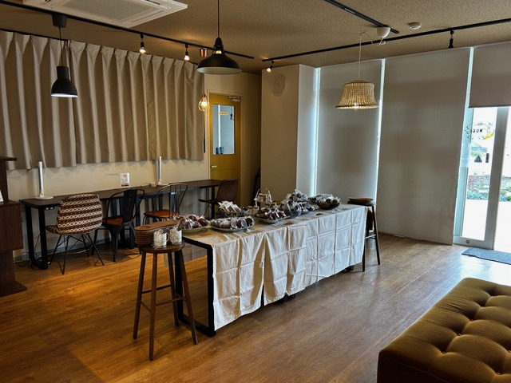
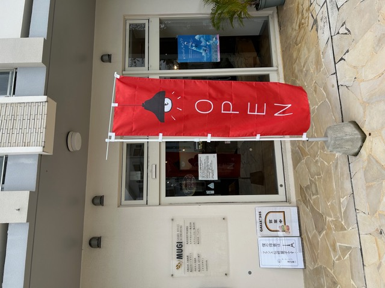
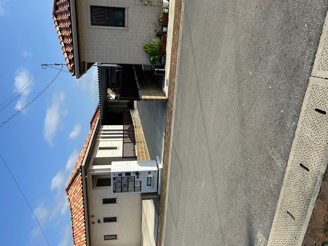
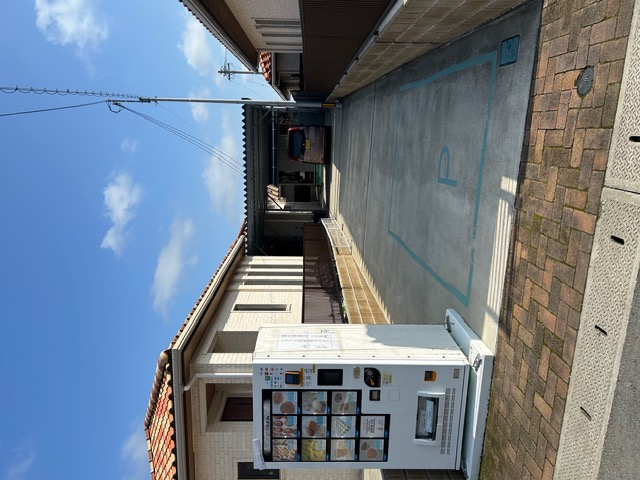
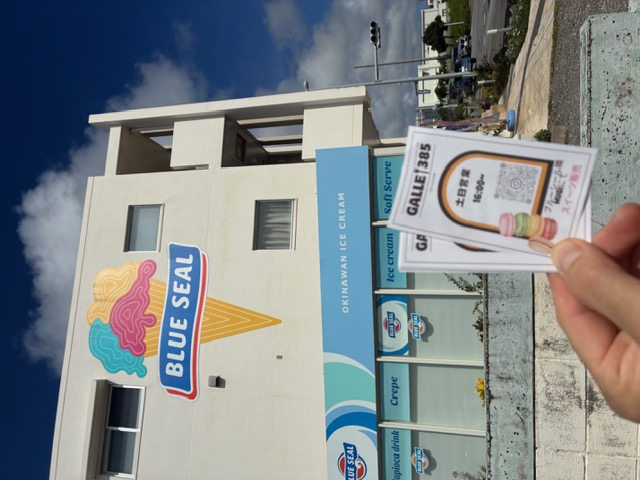

Galle 385ガレ385
Crispy cream puffs, weekend sweets at MUGI, and 24-hour frozen sweets in Miyakojima.
サクサクのパイシュー、週末限定のMUGI販売、24時間楽しめる冷凍スイーツ自販機。
Galle 385, written ガレ385 in Japanese, is a new Miyakojima sweets business by pastry chef Kenichi Watanabe, who ran a pastry shop in Aichi for 20 years before moving to Miyakojima with his family. After selling his former company, he brought that long experience to the island and started building a new sweets story here.
ガレ385は、愛知県で20年間洋菓子店を営んできた渡辺憲一さんが、家族と宮古島へ移住して始めたスイーツのお店です。前会社を売却した後、長年の経験を宮古島へ持ち込み、新しいスイーツの物語を少しずつ育てています。
The signature item is a crispy pie cream puff for 420 yen, alongside around 15 sweets depending on the day. Weekend sales take place inside Coworking Space MUGI for two hours each evening, and frozen sweets are also available anytime from a 24-hour vending machine on the family property.
自慢の商品は、サクサク食感のパイシュー420円。日によって15種類前後のスイーツが並びます。週末の夕方はコワーキングスペースMUGI内で各2時間販売し、自宅敷地内では24時間営業の冷凍スイーツ自販機も利用できます。
Why My Miyakojima Recommends ItMy Miyakojimaがおすすめする理由
My Miyakojima recommends Galle 385 because it has the feeling of a small local business still being discovered. It is not a big storefront on a main tourist route yet, and that is part of what makes it meaningful: a skilled pastry chef quietly building regular customers, one cream puff and one frozen sweet at a time.
My Miyakojimaがガレ385をおすすめする理由は、まだ多くの旅行者に知られていない、これから育っていくローカルスイーツのお店だからです。大きな観光通りの店舗ではありませんが、そこにこそ魅力があります。経験ある職人さんが、パイシューや冷凍スイーツを通して少しずつ常連さんを増やしている、応援したくなる一軒です。
Photos 写真




Good to Know 利用情報
Contact お問い合わせ
Before visiting
Weekend sales are limited to two evening hours. For availability or large orders, calling ahead is recommended.
訪問前に
週末販売は夕方2時間限定です。商品の有無やまとまった注文については、事前の電話確認がおすすめです。
For Miyakojima Businesses宮古島の事業者さまへ
Share your story in a way visitors can feel.
お店やサービスの魅力を、英語と日本語で丁寧に届ける紹介ページを制作しています。
My Miyakojima creates curated bilingual feature pages for selected local businesses, helping visitors understand your story before they contact you.
Contact My Miyakojima掲載について相談する